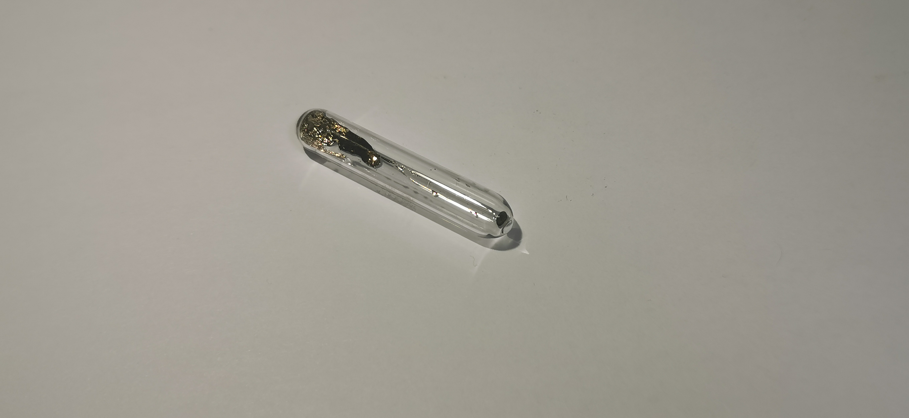
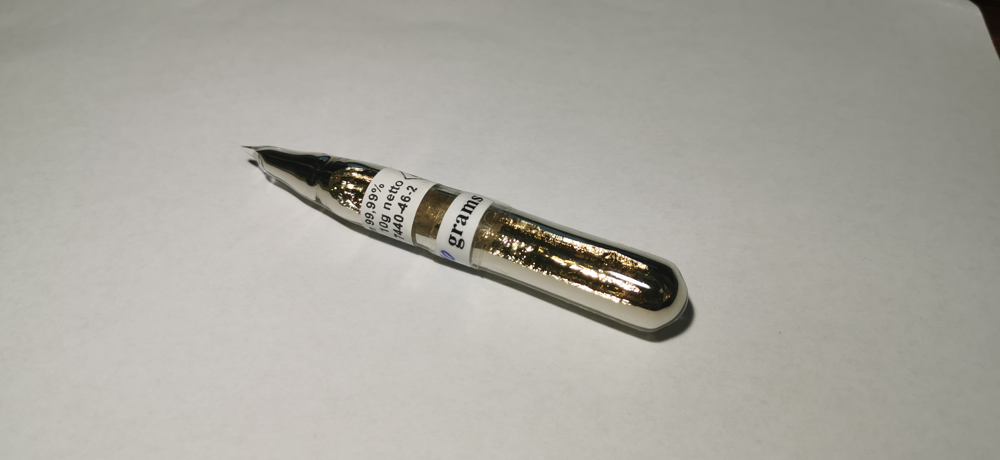
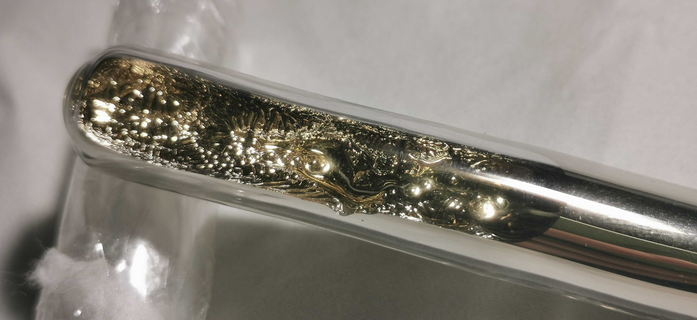
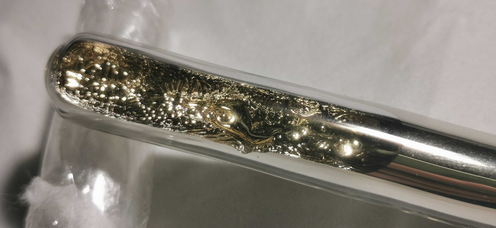

铯
2019.8 100mg铯 来自冥灵
2020.2 10g 99.99% 来自Onyxmet
 

外观：铯通常是金黄色带有金属光泽的液体或固体（碱金属一族自上至下颜色变得越来越“浅”，是由于激发其电子所需频率较短，换言之，铯的吸收光谱已经进入紫色区末区，这使得其颜色呈现金黄色）。铯的熔点为28.5℃（室温或接近室温下液态的五种金属：铷39℃，钫约27℃，汞-39°C，镓30℃，鎶在室温下大概也是液态，但由于研究尚少暂不讨论），可以通过用手捂热熔化然后在室温下凝固形成美丽的鱼骨状晶体。这种特性在铷上也有，但相对来说铯通常比铷更便宜，因此很多元素收藏者青睐收藏一支量大、纯度高的铯用于观赏。
价格：铯本身不算稀有元素，但由于其活泼性不便于储存，对于玻封收藏品来说，量越大，平均下来每克的价格越少。19年8月我购买了冥灵的100mg铯，花费了100多元；而如果买1g铯，也仅需花费200-300元；因此对于收藏者来说，10g-20g的价格是大家可以接受的。本次在Onyxmet上购物，让我意想不到，这支10g的铯合算人民币只要不到1000元，而且仍然十分美丽，大赞Onyxmet！
危险：在元素周期表目前发现的稳定元素中，铯是最活泼的金属单质，燃点大概在28℃附近，在空气中就会吸热燃烧起来，这使得铯的储存是很困难的。另外，铯遇水爆炸（铯遇水立刻爆炸，而不会像钾、钠一样有聚氢（accumulate）的过程，使其虽然响声很大，但爆炸力度不足钾，甚至钠）。Onyxmet为我包装这支铯时，用了PVC管加三层包装，十分贴心，诸位收藏者也应当采取合理的方式储存。
有关对Onyxmet在疫情期间仍然贴心服务的致谢，见溴。